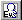

Creating your first event
Create a new chicken event in the Sample Game's "Sample Map A" that says "Cock-a-doodle-doo♪" when the player talks to it.
Select the map
Open the Map Selection window by clicking the  icon, then select "1: Sample Map A."
icon, then select "1: Sample Map A."
Switch the map layer
Switch to the Event Layer

. Right-click near the area just above the tranfer destination position. A menu like the one on the right will appear.Select "Create/Edit Event."
Create a new event
The Event Settings window will appear, as shown on the right.
Set the event graphics
Let's set the event's walking sprite first. To do that, double-click the area highlighted in red.
Change the facing direction
A window like the one on the right will appear. Select "Animal_Chicken.png" and click "OK".
Great work!
The chicken sprite has now been successfully assigned to the event.
Let's make it talk
Next, let's add some dialogue for the chicken.
Click the button in the lower-right corner of the Event Window: "■ Open Command Window ■"
Open Command Window
The "Command Window" will now open. Make sure the selected tab is "Show Message", as shown on the right.

Add Show Message command
In the text input field, type what the chicken says. Something like: "Cock-a-doodle-doo♪", and click the "Insert" button.

Double-check the event settings
If your event looks like the example shown on the right, you’ve set it up correctly.
By default, the event Trigger is already set to "Confirm key". This means the event will activate when the player presses the key while facing it.
Remember to save it!
Click the "Save (Entire Map)" button in the lower-right corner of the Event window. Then click "Test Play (F9)". This will save the map with the new event and start a test play session.
Let's play test
At the title screen, select "New Game".
After the introduction finishes, walk up to the chicken you just created, and press the Confirm Key while facing it.
The chicken should say: "Cock-a-doodle-doo♪"
Great job, and congratulations on creating your first event!
What is the "Name" field actually used for?
When you assign a sprite to an event, the filename is automatically entered in the "Name" field.
However, you're free to change it to anything you like, such as "Cock-a-doodle-doo", "Talking Chicken" or just "Chicken".
When you place your cursor over an event while editing the Event Layer, the event's name will appear in the title bar.
That's all it does, so giving it a cool name won’t grant it any special powers 😊
※ This is a faithful translation of the original guide, with minor editorial additions (terminology notes, extra examples, beginner-friendly clarifications) and updated screenshots, while preserving the original intent and instructions.